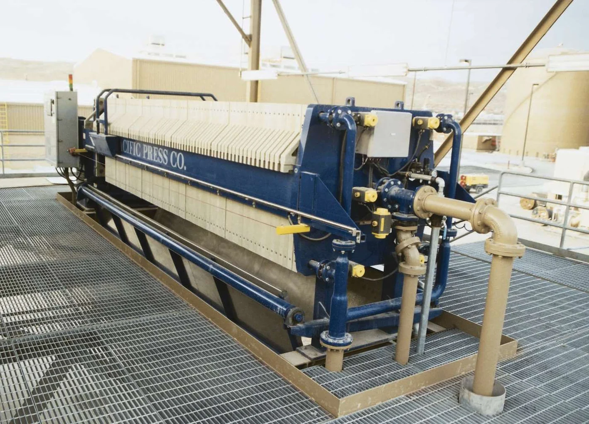

Concrete and Cement Washout Filter Press Rentals
PacPress rents filter presses to ready-mix producers and concrete contractors who need to dewater washout pits, clarify cement slurry, and cut down on hauling volume.

Common Rental Applications
Typical ways PacPress rental filter presses are used in concrete and cement washout.
Washout Pit Dewatering
Removing accumulated cement solids from active washout pits to restore capacity.
Wash Water Clarification
Clarifying high-pH wash water from drum, chute, and equipment washdown.
Returned Concrete Processing
Dewatering slurry from returned or reclaimed concrete before disposal or reuse.
Water Reuse Support
Producing clarified water that can be considered for reuse in batching, subject to plant requirements.
Hauling Reduction
Converting wet washout solids into a drier filter cake to reduce the volume and cost of hauling.
When Renting Makes Sense
Pit at capacity
Washout pits fill faster than expected during high-production periods, and hauling can’t keep pace.
Seasonal production increase
Ready-mix output rises during construction season, increasing wash water volume beyond normal handling capacity.
Compliance pressure
A discharge or reuse deadline requires solids removed and water clarified on a defined timeline.
Avoiding a capital purchase
A rental proves out dewatering performance on your specific slurry before committing to owned equipment.
Sizing & Quote
Tell Us What You Need to Process
Share the material, approximate volume or flow, project location, timeline, and available utilities. PacPress can help identify the rental press and support equipment to discuss.
Common Questions
Frequently Asked Questions
PacPress provides filter press rentals for concrete and cement washout projects that need temporary solids separation, high-pH wash water clarification, or washout pit dewatering. A rental filter press can support pit cleanouts, seasonal production increases, and reduced hauling without requiring a permanent equipment purchase.
Useful sizing information includes material or slurry type, flow or volume, solids percentage if known, desired cake dryness, timeline, site location, available utilities, and any support equipment needs.
Need a Rental Filter Press for Concrete and Cement Washout?
Tell us about your project and a PacPress specialist will help recommend the right rental setup.